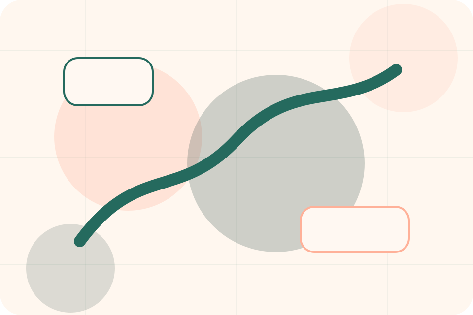
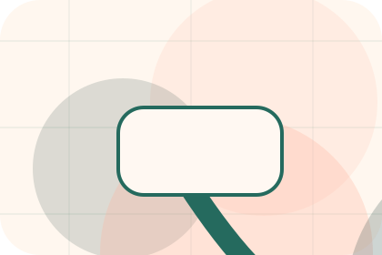
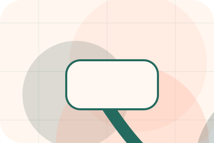
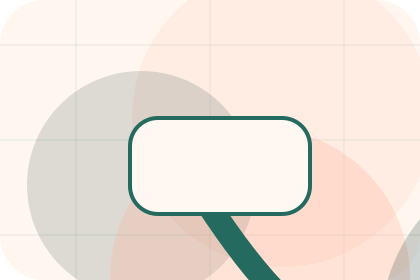
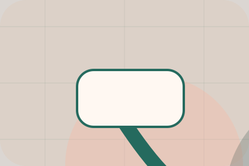

Care / 01
Care by Paw
Care shaped for pets, animals & veterinary services decisions.
Care opens as a clear pets decision hub: what Paw offers, who it helps, why it matters, and which route to take first.
The first screen combines positioning, proof, primary action, and fast internal navigation, so people can act immediately or compare the rest of the care route with context.
Clear intakeHuman follow-upPractical reassurance
Warm appointment hero
Route the care need
Select the closest route and Paw keeps the next step, proof, and follow-up expectation aligned with care and quick triage.

Care / 02
Prevention
Prevention adds care context to the care route, using the modern clinic care flow structure to support care and quick triage before visitors choose a next step.
Paw uses rounded care cards and focused copy to make the decision easier to scan, aligning the section with care and quick triage rather than filling space.
Explore Care
Context
Prevention gives the page a specific angle instead of repeating the navigation label.
Judgment
The rounded care cards show what to compare, what to avoid, and what matters most for pets, animals & veterinary services visitors.

Direction
The final cue points to a useful internal route so the section keeps the journey moving.
Care / 03
Nutrition
Nutrition adds care context to the care route, using the modern clinic care flow structure to support care and quick triage before visitors choose a next step.
Paw uses rounded care cards and focused copy to make the decision easier to scan, aligning the section with care and quick triage rather than filling space.
Explore CareContext
Nutrition gives the page a specific angle instead of repeating the navigation label.
Care / 04
Behaviour
Behaviour adds care context to the care route, using the modern clinic care flow structure to support care and quick triage before visitors choose a next step.
Paw uses rounded care cards and focused copy to make the decision easier to scan, aligning the section with care and quick triage rather than filling space.
Explore CareContext
Behaviour gives the page a specific angle instead of repeating the navigation label.
Judgment
The rounded care cards show what to compare, what to avoid, and what matters most for pets, animals & veterinary services visitors.
Direction
The final cue points to a useful internal route so the section keeps the journey moving.
Care / 05
Stages
Stages adds care context to the care route, using the modern clinic care flow structure to support care and quick triage before visitors choose a next step.
Paw uses rounded care cards and focused copy to make the decision easier to scan, aligning the section with care and quick triage rather than filling space.
Explore Care- 01
Context
Stages gives the page a specific angle instead of repeating the navigation label.
- 02
Judgment
The rounded care cards show what to compare, what to avoid, and what matters most for pets, animals & veterinary services visitors.
- 03
Direction
The final cue points to a useful internal route so the section keeps the journey moving.
Care / 06
Symptoms
Symptoms frames the pressure behind the visit, then connects it to a practical path visitors can recognise and act on.
The copy avoids blame and panic. It shows the common friction, the practical consequence, and the calmer route Paw uses to move people forward.
Explore CarePressure
Symptoms names the real friction visitors bring to the care route, so the page feels relevant before any claim is made.
Consequence
The copy connects that friction to practical risk, delay, confusion, or missed opportunity without exaggerating it.
Safer Step
The final cue moves visitors toward a clearer route instead of leaving them with the problem alone.
Care / 07
Homecare
Homecare adds care context to the care route, using the modern clinic care flow structure to support care and quick triage before visitors choose a next step.
Paw uses rounded care cards and focused copy to make the decision easier to scan, aligning the section with care and quick triage rather than filling space.
Explore Care
Context
Homecare gives the page a specific angle instead of repeating the navigation label.
Care / 08
Advice
Advice adds care context to the care route, using the modern clinic care flow structure to support care and quick triage before visitors choose a next step.
Paw uses rounded care cards and focused copy to make the decision easier to scan, aligning the section with care and quick triage rather than filling space.
Explore CareContext
Advice gives the page a specific angle instead of repeating the navigation label.
Judgment
The rounded care cards show what to compare, what to avoid, and what matters most for pets, animals & veterinary services visitors.
Direction
The final cue points to a useful internal route so the section keeps the journey moving.
Care / 09
Support
Support explains the practical scope, best-fit situations, and expected outcome so pets visitors can compare options without decoding jargon.
The section keeps the offer concrete: what is included, who it is best for, what decision it supports, and which linked route gives the deeper detail.
Open Contact- 01
Best Fit
Who should use support and when it belongs in the care journey.
- 02
What Changes
The practical benefit visitors should expect after choosing this route.
- 03
Deeper Route
Where to compare details, pricing, support, or contact options before committing.
Care / 10
Book Visit
Paw closes the care route with a clear action, a quick reminder of the value, and a low-friction way to book a visit.
Visitors who are ready can use the primary action. Visitors who are still comparing can scan the section links, proof, and support routes before they book a visit.
Book VisitThe final block keeps the choice simple: act now, compare one more proof route, or send enough detail for a focused response.
Book Visitcare and quick triage
Book Visit
A veterinary site with warm urgent-care modules, appointment paths, team proof, and symptom routing. Care ends with a direct path to book a visit, plus enough context for visitors who still need to compare.

Book Visit